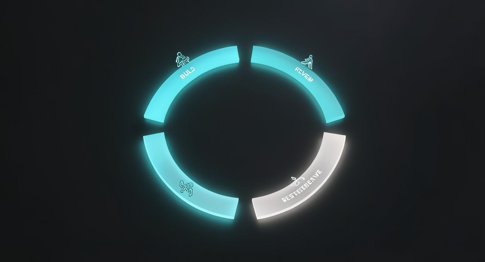

Agile Methodology in Software Development: Complete Guide
Agile शब्द आज लगभग हर सॉफ्टवेयर कंपनी के job description में मिलता है, पर इसका मतलब हर जगह एक जैसा नहीं होता। कहीं इसका मतलब है रोज़ की 15 मिनट की बैठक, कहीं दो हफ्ते का sprint, और कहीं सिर्फ एक board जिस पर sticky notes चिपकी होती हैं। असल में agile इनमें से कोई एक चीज़ नहीं है — यह काम करने का एक तरीका है जिसमें छोटे हिस्सों में काम होता है, हर हिस्से के बाद नतीजा दिखता है, और दिशा बदलने की गुंजाइश रहती है।
इस आर्टिकल में मैं समझाऊँगा कि agile methodology असल में क्या कहती है, Scrum और Kanban में क्या फर्क है, एक sprint में क्या-क्या होता है, कौन से roles होते हैं, और सबसे ज़रूरी — किन गलतियों से agile कागज़ी कवायद बन जाता है। मैं उन टीमों के उदाहरण भी दूँगा जहाँ यह ढाँचा काम आया और जहाँ उलटा असर हुआ।
छोटा जवाब: Agile का मतलब है काम को छोटे-छोटे टुकड़ों में बाँटकर, हर दो हफ्ते में कुछ दिखने लायक पूरा करना और उसके बाद दिशा जाँचना। इसके चार आधार हैं — व्यक्ति और बातचीत, चलता हुआ सॉफ्टवेयर, ग्राहक के साथ सहयोग, और बदलाव के लिए तैयारी। Scrum और Kanban इसके दो लोकप्रिय तरीके हैं; tool कभी भी ज़रूरी नहीं।
Agile क्या है — और यह क्यों बना
1990 के दशक में बड़े सॉफ्टवेयर प्रोजेक्ट एक लंबे plan से शुरू होते थे। छह महीने design, फिर एक साल code, और अंत में जाकर पता चलता कि ग्राहक को जो चाहिए था वह कुछ और था। इसी दिक्कत से निकलने के लिए 2001 में सत्रह लोगों ने एक छोटा घोषणापत्र लिखा, जिसे Agile Manifesto कहा जाता है। उसमें चार वाक्य हैं, और हर वाक्य कहता है कि एक चीज़ दूसरी से ज़्यादा मायने रखती है — पर दूसरी की कोई कद्र नहीं, ऐसा नहीं कहा गया।
यह बारीकी समझना ज़रूरी है, क्योंकि बहुत सी टीमें "documentation नहीं चाहिए" या "plan नहीं चाहिए" समझ लेती हैं। असल में कहा गया था कि documentation और plan से ज़्यादा काम करता हुआ सॉफ्टवेयर मायने रखता है। यानी दोनों रहेंगे, पर ज़ोर नतीजे पर होगा।
| घोषणापत्र की बात | व्यवहार में मतलब |
|---|---|
| व्यक्ति और बातचीत | Tool से ज़्यादा बात करना; लंबे ईमेल नहीं |
| चलता हुआ सॉफ्टवेयर | Demo हर दो हफ्ते, slides नहीं |
| ग्राहक के साथ सहयोग | Contract की शर्तों से ज़्यादा असली बातचीत |
| बदलाव के लिए तैयारी | Plan बदल सकता है, अगर कारण साफ हो |
Scrum और Kanban: किसे चुनें
Agile एक सोच है; Scrum और Kanban उसे लागू करने के दो तरीके हैं। दोनों में काम दिखता है, पर काम का बहाव अलग होता है।
Scrum
Scrum में काम तय अवधि के sprint में होता है — आम तौर पर दो हफ्ते। शुरुआत में तय होता है कि इस sprint में क्या पूरा होगा, और अंत में demo तथा retrospective होती है। यह उन टीमों के लिए अच्छा है जहाँ feature के रूप में काम आता है और हर दो हफ्ते में एक ठोस नतीजा चाहिए।
Kanban
Kanban में sprint नहीं होता। काम एक board पर बहता है और हर कॉलम में सीमा तय होती है कि एक समय में कितने काम चल सकते हैं। यह उन टीमों के लिए बेहतर है जहाँ काम लगातार आता है — support, bug fixing, operations।
| पहलू | Scrum | Kanban |
|---|---|---|
| अवधि | तय sprint (2 हफ्ते) | लगातार बहाव |
| Roles | Product Owner, Scrum Master, टीम | कोई तय roles नहीं |
| Ceremonies | Planning, daily, review, retro | Daily और board समीक्षा |
| सबसे अच्छा कब | Feature विकास | लगातार आने वाला काम |

एक sprint में असल में क्या होता है
Planning — दो हफ्ते का वादा
Sprint planning में टीम तय करती है कि अगले दो हफ्ते में क्या पूरा करेगी। अच्छी planning में हर काम का एक साफ "done" मतलब होता है। जहाँ यह नहीं होता, वहाँ sprint के अंत में सब कुछ "लगभग पूरा" दिखता है।
Daily — 15 मिनट, तीन सवाल
रोज़ की छोटी बैठक का मकसद रिपोर्ट देना नहीं, अटकाव पकड़ना है। क्या कल पूरा हुआ, आज क्या करना है, और कहाँ मदद चाहिए। अगर यह बैठक 30 मिनट की हो जाए, तो कुछ गड़बड़ है — आम तौर पर इसका मतलब है कि समस्याएँ बैठक में ही सुलझाई जा रही हैं, जो बाद में अलग से होनी चाहिए।
Review — जो बना, वह दिखाओ
Review में टीम असली काम दिखाती है और stakeholder सवाल पूछते हैं। यहाँ सबसे कीमती चीज़ feedback है, appreciation नहीं। अगर review में कोई कठिन सवाल नहीं उठा, तो शायद लोग बोल नहीं रहे।
Retrospective — टीम अपने तरीके सुधारती है
Retro में सिर्फ टीम होती है। सवाल यह है कि क्या अच्छा चला, क्या बिगड़ा, और अगले sprint में एक चीज़ क्या बदलेंगे। यहाँ "एक चीज़" शब्द जान-बूझकर है — दस सुधार तय करने वाली टीमें कुछ भी नहीं बदलतीं।
Roles: किसका क्या काम है
Product Owner तय करता है कि क्या बनाना है और किस क्रम में। यह भूमिका सबसे मुश्किल है, क्योंकि इसमें "नहीं" कहना पड़ता है। जहाँ Product Owner कमज़ोर होता है, वहाँ backlog हर हफ्ते बढ़ता जाता है और टीम हर चीज़ थोड़ी-थोड़ी करती है।
Scrum Master प्रक्रिया और अटकाव संभालता है। यह कोई manager नहीं है — इसका काम टीम को काम करने से रोकने वाली चीज़ें हटाना है। अगर यह भूमिका "रिपोर्ट माँगने वाला" बन जाए, तो इसका पूरा मतलब बदल जाता है।
Development team असल काम करती है। अच्छी agile टीम में लोग एक-दूसरे का काम कर सकते हैं, और किसी एक व्यक्ति पर पूरा हिस्सा नहीं टिका होता।
| Role | मुख्य ज़िम्मेदारी | आम गलती |
|---|---|---|
| Product Owner | प्राथमिकता तय करना | हर माँग को हाँ कह देना |
| Scrum Master | अटकाव हटाना | Status रिपोर्ट माँगना |
| Team | काम पूरा करना, अनुमान देना | अनुमान दबाव में देना |
| Stakeholders | Feedback और संदर्भ देना | Review में देर से आना |
Agile को कागज़ी कवायद बनने से कैसे रोकें
सबसे आम समस्या यह है कि बैठकें और board मौजूद हैं, पर नतीजा नहीं बदला। इसकी पहचान सीधी है — अगर हर दो हफ्ते में कुछ असली चीज़ demo में नहीं दिखती, तो प्रक्रिया चल रही है पर agile नहीं।
छोटे टुकड़े बनाएँ। जो काम दो हफ्ते में पूरा न हो, उसे तोड़ें। "पूरा" का मतलब है कि वह इस्तेमाल किया जा सके, भले छोटा हो।
Definition of done लिखें। Test, review, documentation और deploy — क्या-क्या शामिल है, यह हर टीम के लिए लिखा हो। बिना इसके हर काम 90% पर अटका रहेगा।
बैठकें छोटी रखें। Daily 15 मिनट, planning दो घंटे, retro एक घंटा। अगर इससे ज़्यादा लग रहा है, तो काम बहुत बड़ा है या लोग अनिश्चित हैं।
एक सुधार, हर बार। Retro में एक ऐसा बदलाव चुनें जो अगले sprint में नापा जा सके, और उसे अगली retro में जाँचें।
Tool को प्रक्रिया न बनने दें। Board बदलना आसान है; आदत बदलना मुश्किल। इसलिए पहले आदत तय करें, फिर tool चुनें।
टीम के आकार के हिसाब से क्या बदलें
तीन से पाँच लोगों की टीम में ज़्यादा ढाँचा ज़रूरी नहीं। एक छोटा board, हर दो हफ्ते में demo और हर हफ्ते 20 मिनट की समीक्षा काफी है। ऐसी टीम में planning की बैठक 30 मिनट में हो जानी चाहिए, क्योंकि सब लोग एक-दूसरे का काम जानते हैं।
आठ से बारह लोगों की टीम में coordination का काम बढ़ जाता है। यहाँ सबसे उपयोगी चीज़ है — काम को ऐसे हिस्सों में बाँटना कि दो लोग एक ही चीज़ पर न हों। साथ में यह तय करना कि कौन सा हिस्सा किसके पास है, वरना एक ही बग पर तीन लोग काम करते मिलते हैं।
कई टीमों वाले प्रोडक्ट में एक और स्तर जुड़ता है — अलग-अलग टीमों के बीच निर्भरता। यहाँ काम आता है हर दो हफ्ते की एक छोटी sync बैठक, जिसमें हर टीम बताती है कि वह दूसरों से क्या चाहती है। लंबी बैठकें नहीं, सिर्फ निर्भरताओं की सूची।
घर से काम करने वाली टीमों में अलग ध्यान
दूर से काम करने पर board और लिखे हुए फैसले ज़्यादा मायने रखते हैं, क्योंकि किसी को भी पास बैठकर पूछने का मौका नहीं मिलता। इसलिए हर काम के साथ एक साफ लिखा विवरण रखें, और फैसले चैट में बिखरने के बजाय एक जगह जमा करें।
एक आदत जो बहुत फर्क डालती है — हर बैठक के बाद तीन लाइन का सारांश लिखना। इससे जो लोग बैठक में नहीं थे, वे भी काम आगे बढ़ा सकते हैं, और बाद में यह याद रखने की ज़रूरत नहीं पड़ती कि क्या तय हुआ था।
पाँच गलतियाँ जो agile को नुकसान पहुँचाती हैं
पहली — sprint के बीच में काम जोड़ते जाना, जिससे टीम का वादा हर बार टूटता है। दूसरी — estimation को deadline की तरह इस्तेमाल करना। तीसरी — retro को शिकायत सत्र बनाना, जहाँ कोई बदलाव तय नहीं होता। चौथी — demo में stakeholder को बुलाना और उनके सवाल न सुनना। पाँचवीं — हर चीज़ को "agile" कहकर plan, documentation और testing छोड़ देना।
पाँचवीं गलती सबसे महंगी है, क्योंकि वह महीनों बाद पकड़ में आती है — जब सिस्टम में कोई नहीं जानता कि क्या बना है और क्यों बना है।
मैंने agile टीमों के साथ क्या सीखा
सबसे बड़ी सीख यह रही कि agile की सफलता बैठकों की संख्या से नहीं, Product Owner की स्पष्टता से तय होती है। जिन टीमों में हर sprint में एक साफ प्राथमिकता होती थी, वहाँ नतीजा दिखता था; जहाँ हर हफ्ते नई प्राथमिकता आती थी, वहाँ प्रक्रिया सुंदर थी पर काम अधूरा।
दूसरी सीख — छोटा demo सबसे बड़ा हथियार है। जब stakeholder हर दो हफ्ते में असली चीज़ देखते हैं, तो बातचीत अंदाज़ों से हटकर ठोस बातों पर आ जाती है। जहाँ demo नहीं होता, वहाँ महीनों बाद एक बड़ी निराशा मिलती है।
तीसरी सीख — retro में एक बदलाव लागू करना, दस सुझाव लिखने से बेहतर है। हमने एक बार तीन महीने लगातार एक ही सुधार चुना — "हर काम का done मतलब लिखो" — और उसी से सबसे ज़्यादा फर्क पड़ा।
चौथी सीख — sprint की लंबाई से ज़्यादा मायने यह रखता है कि हर sprint में कितना काम सच में पूरा होता है। जब हमने दो हफ्ते के sprint में आठ की जगह पाँच काम रखे, तो नतीजा पहले से बेहतर निकला, क्योंकि टीम एक-एक चीज़ को अंत तक पहुँचा सकी। अधूरे काम की सूची लंबी होने से बेहतर है कि छोटी सूची पूरी हो, क्योंकि अधूरा काम अगले sprint में बोझ बनकर आता है और लोग उससे बचने लगते हैं।
अक्सर पूछे जाने वाले सवाल
क्या agile सिर्फ software टीमों के लिए है?
नहीं, पर सबसे ज़्यादा वहीं काम आता है, क्योंकि वहाँ नतीजा जल्दी दिखता है और बदलाव सस्ता है। Marketing, design और operations में भी इसके सिद्धांत लागू होते हैं, बस sprint की लंबाई और "done" का मतलब बदल जाता है।
क्या Scrum में हर दिन बैठक ज़रूरी है?
Daily बैठक का मकसद अटकाव पकड़ना है। अगर टीम वैसे ही एक-दूसरे से बात कर रही है, तो इसे हल्का रखा जा सकता है। पर पूरी तरह छोड़ने पर अटकाव देर से पता चलता है।
Estimation कैसे करें — story points या घंटे?
दोनों चलते हैं, पर जो भी चुनें, उसे deadline न बनाएँ। Story points का फायदा यह है कि वे अनिश्चितता संभालते हैं, पर तभी जब टीम उन्हें लगातार एक ही तरह से समझे।
क्या agile बड़ी टीमों में काम करता है?
करता है, पर तब एक टीम की जगह कई टीमें होती हैं और उनके बीच coordination का ढाँचा चाहिए। सबसे सुरक्षित रास्ता यह है कि हर टीम छोटी रहे और काम के हिस्से साफ बँटे हों।
अगर client हर हफ्ते माँग बदलता है तो क्या करें?
यही agile का असली उपयोग है, बशर्ते हर बदलाव को लिखा जाए और प्राथमिकता में रखा जाए। बदलाव को sprint के बीच नहीं, अगले sprint की शुरुआत में लें — इससे टीम का वादा टूटता नहीं।
अगर आप इस ढाँचे को अपने प्रोडक्ट पर लागू करना चाहते हैं, तो product development के चरणों वाला आर्टिकल और Proof of Concept की गाइड पढ़ें। टीम के काम की योजना में AI readiness checklist भी काम आएगी।
स्रोत: इस विषय पर आधारभूत चर्चा Tvisha Technologies के blog लेख Agile Methodology in Software Development (21 अक्टूबर 2026) से प्रेरित है। मूल सिद्धांतों के लिए Agile Manifesto और Scrum की परिभाषा के लिए Scrum Guide देखें। ऊपर के उदाहरण, tables और सुझाव इस साइट के अपने हैं।